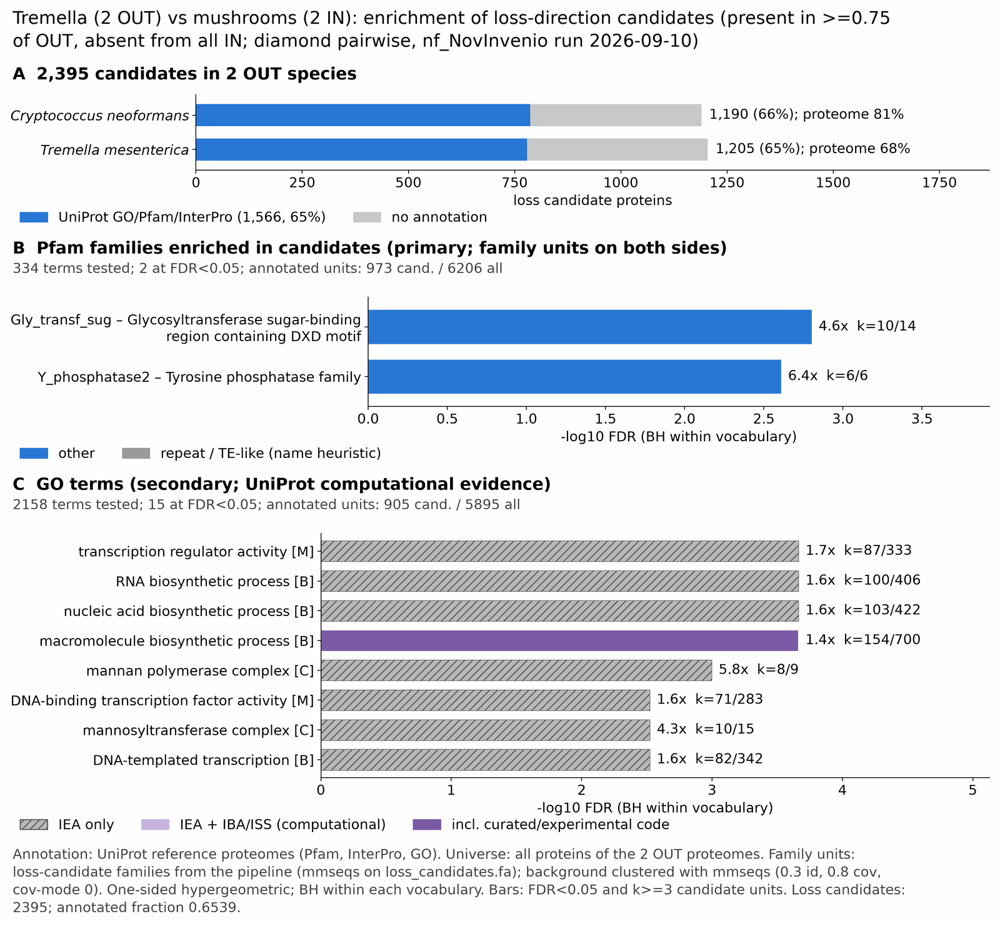

mushrooms tremella: functional enrichment (loss)
One-sided hypergeometric test per term; Benjamini-Hochberg FDR within each scope, level and vocabulary. Candidates are the loss candidates: gene families present in the OUT group and absent from the IN group. Universe: proteome. Background clustered: True (12631 sequences in 8430 clusters, mmseqs easy-cluster --min-seq-id 0.3 -c 0.8). Family level: one unit per candidate family and per background cluster.
Sources: Pfam: 2026-01-27-Pfam38.2; InterPro entries: 110.0; GO: releases/2026-07-26; analysis generated 2026-10-12T18:22:27. Source tables: studies/fungi/mushrooms_tremella/analysis/enrichment/outputs/loss/proteome_clustered.
Full record: PROVENANCE. Run report: report.html.
- Annotation provenance is not fully recorded: PROVENANCE.yaml lists the per-species annotation files and their checksums, but not the UniProt release they come from.
- GO results are secondary. GO annotations include computational evidence (IEA, IBA); the GO evidence column shows if a term has non-IEA support.
- Candidate families (pipeline clustering of candidates) and background clusters (mmseqs clustering of the background proteome) are made by different runs, so family-level counts are not fully comparable.
- Low annotation: the candidate set has less than 50% annotation for GO 49.5%. Enrichment for these vocabularies has low power.
Summary figure

Annotation coverage
Fraction of proteins with at least one term per vocabulary. Universe = all proteins of the species; candidates = the candidate set.
| Species | Set | Proteins | Pfam | Pfam clan | InterPro | GO | Any |
|---|---|---|---|---|---|---|---|
| CneoH99 | universe | 6965 | 75.4% | 61.5% | 80.9% | 72.7% | 81.2% |
| CneoH99 | candidates | 1190 | 54.3% | 39.2% | 65.5% | 50.6% | 66.1% |
| Tremes | universe | 8061 | 62.5% | 51.0% | 67.8% | 59.6% | 68.2% |
| Tremes | candidates | 1205 | 52.6% | 38.9% | 64.1% | 48.5% | 64.6% |
| ALL_OUT | universe | 15026 | 68.5% | 55.8% | 73.9% | 65.6% | 74.2% |
| ALL_OUT | candidates | 2395 | 53.4% | 39.1% | 64.8% | 49.5% | 65.4% |
Tests summary
Per vocabulary: terms with FDR < 0.05 / terms tested. Protein level counts proteins; family level counts candidate families and background clusters.
| Scope | Level | Cand. units | Pfam sig / tested | Pfam clan sig / tested | InterPro sig / tested | GO sig / tested |
|---|---|---|---|---|---|---|
| whole_set | family | 1826 | 2 / 334 | 0 / 228 | 4 / 815 | 15 / 2158 |
| whole_set | protein | 2395 | 5 / 669 | 7 / 301 | 17 / 1562 | 58 / 2822 |
| CneoH99 | family | 1176 | 3 / 225 | 3 / 191 | 3 / 597 | 17 / 1914 |
| CneoH99 | protein | 1190 | 2 / 272 | 3 / 205 | 5 / 721 | 23 / 1998 |
| Tremes | family | 1199 | 2 / 223 | 1 / 188 | 3 / 592 | 11 / 1893 |
| Tremes | protein | 1205 | 2 / 252 | 1 / 196 | 3 / 675 | 13 / 1957 |
Top 25 Pfam terms (whole set, family level)
25 rows shown, ordered by FDR then p-value; 2 have FDR < 0.05 (bold).
| Term | Name | k / N cand. | n / M bg | Fold | FDR (BH) |
|---|---|---|---|---|---|
| PF04488 | Gly_transf_sug: Glycosyltransferase sugar-binding region containing DXD motif | 10 / 973 | 14 / 6206 | 4.556 | 0.002 |
| PF03162 | Y_phosphatase2: Tyrosine phosphatase family | 6 / 973 | 6 / 6206 | 6.378 | 0.002 |
| PF00046 | Homeodomain: Homeodomain | 7 / 973 | 13 / 6206 | 3.434 | 0.182 |
| PF02037 | SAP: SAP domain | 4 / 973 | 5 / 6206 | 5.103 | 0.220 |
| PF00533 | BRCT: BRCA1 C Terminus (BRCT) domain | 5 / 973 | 10 / 6206 | 3.189 | 0.674 |
| PF13359 | DDE_Tnp_4: DDE superfamily endonuclease | 4 / 973 | 7 / 6206 | 3.645 | 0.674 |
| PF00170 | bZIP_1: bZIP transcription factor | 6 / 973 | 14 / 6206 | 2.734 | 0.674 |
| PF00172 | Zn_clus: Fungal Zn(2)-Cys(6) binuclear cluster domain | 26 / 973 | 109 / 6206 | 1.521 | 0.674 |
| PF01370 | Epimerase: NAD dependent epimerase/dehydratase family | 6 / 973 | 15 / 6206 | 2.551 | 0.715 |
| PF04479 | RTA1: RTA1 like protein | 4 / 973 | 8 / 6206 | 3.189 | 0.715 |
| PF10342 | Kre9_KNH: Kre9/KNH-like N-terminal Ig-like domain | 4 / 973 | 8 / 6206 | 3.189 | 0.715 |
| PF04438 | zf-HIT: HIT zinc finger | 3 / 973 | 5 / 6206 | 3.827 | 0.715 |
| PF12550 | GCR1_C: Transcriptional activator of glycolytic enzymes | 3 / 973 | 5 / 6206 | 3.827 | 0.715 |
| PF13041 | PPR_2: PPR repeat family | 3 / 973 | 5 / 6206 | 3.827 | 0.715 |
| PF01738 | DLH: Dienelactone hydrolase family | 4 / 973 | 9 / 6206 | 2.835 | 0.818 |
| PF11754 | Velvet: Velvet factor | 4 / 973 | 9 / 6206 | 2.835 | 0.818 |
| PF00646 | F-box: F-box domain | 3 / 973 | 6 / 6206 | 3.189 | 1.000 |
| PF00010 | HLH: Helix-loop-helix DNA-binding domain | 5 / 973 | 15 / 6206 | 2.126 | 1.000 |
| PF00702 | Hydrolase: haloacid dehalogenase-like hydrolase | 5 / 973 | 15 / 6206 | 2.126 | 1.000 |
| PF04082 | Fungal_trans: Fungal specific transcription factor domain | 20 / 973 | 92 / 6206 | 1.387 | 1.000 |
| PF02518 | HATPase_c: Histidine kinase-, DNA gyrase B-, and HSP90-like ATPase | 4 / 973 | 11 / 6206 | 2.319 | 1.000 |
| PF02845 | CUE: CUE domain | 3 / 973 | 7 / 6206 | 2.734 | 1.000 |
| PF03134 | TB2_DP1_HVA22: TB2/DP1, HVA22 family | 3 / 973 | 7 / 6206 | 2.734 | 1.000 |
| PF04577 | Glyco_transf_61: Glycosyltransferase 61 | 3 / 973 | 7 / 6206 | 2.734 | 1.000 |
| PF05686 | Glyco_transf_90: Glycosyl transferase family 90 | 3 / 973 | 7 / 6206 | 2.734 | 1.000 |
Top 25 InterPro terms (whole set, family level)
25 rows shown, ordered by FDR then p-value; 4 have FDR < 0.05 (bold).
| Term | Name | k / N cand. | n / M bg | Fold | FDR (BH) |
|---|---|---|---|---|---|
| IPR039367 | Family:Initiation-specific alpha-1,6-mannosyltransferase Och1-like | 8 / 1167 | 9 / 6783 | 5.167 | 0.005 |
| IPR007577 | Conserved_site:Glycosyltransferase, DXD sugar-binding motif | 10 / 1167 | 14 / 6783 | 4.152 | 0.005 |
| IPR004861 | Family:Atypical dual-specificity phosphatase Siw14-like | 6 / 1167 | 6 / 6783 | 5.812 | 0.007 |
| IPR004827 | Domain:Basic-leucine zipper domain | 14 / 1167 | 29 / 6783 | 2.806 | 0.022 |
| IPR046347 | Homologous_superfamily:Basic-leucine zipper domain superfamily | 12 / 1167 | 26 / 6783 | 2.683 | 0.093 |
| IPR003034 | Domain:SAP domain | 5 / 1167 | 7 / 6783 | 4.152 | 0.292 |
| IPR001356 | Domain:Homeodomain | 7 / 1167 | 13 / 6783 | 3.13 | 0.292 |
| IPR011008 | Homologous_superfamily:Dimeric alpha-beta barrel | 7 / 1167 | 13 / 6783 | 3.13 | 0.292 |
| IPR035896 | Homologous_superfamily:AN1-like Zinc finger | 4 / 1167 | 5 / 6783 | 4.65 | 0.341 |
| IPR002885 | Repeat:Pentatricopeptide repeat | 7 / 1167 | 14 / 6783 | 2.906 | 0.399 |
| IPR029044 | Homologous_superfamily:Nucleotide-diphospho-sugar transferases | 15 / 1167 | 46 / 6783 | 1.895 | 0.590 |
| IPR007657 | Family:Glycosyltransferase 61 | 4 / 1167 | 6 / 6783 | 3.875 | 0.595 |
| IPR036361 | Homologous_superfamily:SAP domain superfamily | 4 / 1167 | 6 / 6783 | 3.875 | 0.595 |
| IPR006439 | Family:HAD hydrolase, subfamily IA | 5 / 1167 | 9 / 6783 | 3.229 | 0.595 |
| IPR052202 | 5 / 1167 | 10 / 6783 | 2.906 | 0.956 | |
| IPR027806 | Domain:Harbinger transposase-derived nuclease domain | 4 / 1167 | 7 / 6783 | 3.321 | 1.000 |
| IPR001509 | Domain:NAD-dependent epimerase/dehydratase | 6 / 1167 | 15 / 6783 | 2.325 | 1.000 |
| IPR036420 | Homologous_superfamily:BRCT domain superfamily | 7 / 1167 | 19 / 6783 | 2.141 | 1.000 |
| IPR007568 | Family:RTA-like protein | 4 / 1167 | 8 / 6783 | 2.906 | 1.000 |
| IPR018466 | Domain:Cell wall synthesis protein KRE9/Knh1-like, N-terminal | 4 / 1167 | 8 / 6783 | 2.906 | 1.000 |
| IPR007529 | Domain:Zinc finger, HIT-type | 3 / 1167 | 5 / 6783 | 3.487 | 1.000 |
| IPR018357 | Conserved_site:Hexapeptide transferase, conserved site | 3 / 1167 | 5 / 6783 | 3.487 | 1.000 |
| IPR022210 | Domain:Transcription activator GCR1-like domain | 3 / 1167 | 5 / 6783 | 3.487 | 1.000 |
| IPR036514 | Homologous_superfamily:SGNH hydrolase superfamily | 3 / 1167 | 5 / 6783 | 3.487 | 1.000 |
| IPR050600 | Family:SETD3/SETD6 methyltransferase | 3 / 1167 | 5 / 6783 | 3.487 | 1.000 |
Top 15 GO terms (whole set, family level) — secondary, computational evidence (IEA/IBA) included
15 rows shown, ordered by FDR then p-value; 15 have FDR < 0.05 (bold).
| Term | Name | k / N cand. | n / M bg | Fold | FDR (BH) | GO evidence | Families with non-IEA |
|---|---|---|---|---|---|---|---|
| GO:0140110 | molecular_function:transcription regulator activity | 87 / 905 | 333 / 5895 | 1.702 | 2.18e-04 | IEA_only | 0 |
| GO:0032774 | biological_process:RNA biosynthetic process | 100 / 905 | 406 / 5895 | 1.604 | 2.18e-04 | IEA_only | 0 |
| GO:0141187 | biological_process:nucleic acid biosynthetic process | 103 / 905 | 422 / 5895 | 1.59 | 2.18e-04 | IEA_only | 0 |
| GO:0009059 | biological_process:macromolecule biosynthetic process | 154 / 905 | 700 / 5895 | 1.433 | 2.18e-04 | has_non_IEA | 1 |
| GO:0000136 | cellular_component:mannan polymerase complex | 8 / 905 | 9 / 5895 | 5.79 | 0.001 | IEA_only | 0 |
| GO:0003700 | molecular_function:DNA-binding transcription factor activity | 71 / 905 | 283 / 5895 | 1.634 | 0.003 | IEA_only | 0 |
| GO:0031501 | cellular_component:mannosyltransferase complex | 10 / 905 | 15 / 5895 | 4.343 | 0.003 | IEA_only | 0 |
| GO:0006351 | biological_process:DNA-templated transcription | 82 / 905 | 342 / 5895 | 1.562 | 0.003 | IEA_only | 0 |
| GO:0005667 | cellular_component:transcription regulator complex | 28 / 905 | 81 / 5895 | 2.252 | 0.003 | IEA_only | 0 |
| GO:0009101 | biological_process:glycoprotein biosynthetic process | 20 / 905 | 51 / 5895 | 2.554 | 0.006 | IEA_only | 0 |
| GO:0009100 | biological_process:glycoprotein metabolic process | 21 / 905 | 55 / 5895 | 2.487 | 0.006 | IEA_only | 0 |
| GO:0000009 | molecular_function:alpha-1,6-mannosyltransferase activity | 9 / 905 | 14 / 5895 | 4.187 | 0.008 | IEA_only | 0 |
| GO:0016592 | cellular_component:mediator complex | 10 / 905 | 18 / 5895 | 3.619 | 0.015 | IEA_only | 0 |
| GO:0006357 | biological_process:regulation of transcription by RNA polymerase II | 34 / 905 | 120 / 5895 | 1.846 | 0.028 | IEA_only | 0 |
| GO:0034654 | biological_process:nucleobase-containing compound biosynthetic process | 107 / 905 | 511 / 5895 | 1.364 | 0.037 | IEA_only | 0 |
Actin cytoskeleton controls
Known actin-related families and how many of their proteins pass each filter. Protein ID columns are left out.
| control | pfam_ids | desc_regex | OUT_universe | OUT_in_matrix | OUT_pass_outgroup_rule | candidates | near_miss_in1 | near_miss_in2 | n_CneoH99 | n_Tremes | n_Ccin | n_Agbis |
|---|---|---|---|---|---|---|---|---|---|---|---|---|
| Arp2/3 ARPC2 (P34-Arc) | PF04045 | 2 | 2 | 2 | 0 | 0 | 2 | 1 | 1 | 1 | 1 | |
| Arp2/3 ARPC3 (P21-Arc) | PF04062 | 2 | 2 | 2 | 0 | 0 | 2 | 1 | 1 | 1 | 1 | |
| Arp2/3 ARPC4 | PF05856 | 2 | 2 | 2 | 0 | 0 | 2 | 1 | 1 | 1 | 1 | |
| Arp2/3 ARPC5 (P16-Arc) | PF04699 | 2 | 2 | 2 | 0 | 0 | 2 | 1 | 1 | 1 | 1 | |
| Arp2/3 ARPC1 (description only) | arp2/3 complex.*(41|p41|subunit 1)|ARPC1 | 0 | 0 | 0 | 0 | 0 | 0 | 0 | 0 | 0 | 0 | |
| Arp2 / Arp3 (description only) | actin-related protein (2|3)\b|\bARP[23]\b | 10 | 10 | 10 | 0 | 0 | 10 | 5 | 5 | 5 | 7 | |
| WAVE complex NCKAP1 | PF09735 | 0 | 0 | 0 | 0 | 0 | 0 | 0 | 0 | 0 | 0 | |
| WAVE complex CYFIP (FragX_IP) | PF05994 | 0 | 0 | 0 | 0 | 0 | 0 | 0 | 0 | 0 | 0 | |
| WAVE complex ABI | PF07815|PF27594 | 0 | 0 | 0 | 0 | 0 | 0 | 0 | 0 | 0 | 0 | |
| SCAR/WAVE (SCAR_helical) | PF27569 | 0 | 0 | 0 | 0 | 0 | 0 | 0 | 0 | 0 | 0 | |
| WASP family (WH1) | PF00568 | 2 | 2 | 2 | 0 | 1 | 1 | 1 | 1 | 2 | 2 | |
| WH2 motif (WASP, WAVE, others) | PF02205 | 4 | 4 | 4 | 1 | 1 | 2 | 2 | 2 | 2 | 1 | |
| Formin FH2 | PF02181 | 3 | 3 | 2 | 0 | 0 | 2 | 1 | 2 | 2 | 2 | |
| Formin Drf_GBD / Drf_FH3 / Drf_DAD | PF06371|PF06367|PF06345 | 5 | 5 | 4 | 0 | 0 | 4 | 2 | 3 | 3 | 3 | |
| Ena/VASP (VASP_tetra) | PF08776 | 0 | 0 | 0 | 0 | 0 | 0 | 0 | 0 | 0 | 0 | |
| Coronin (description only) | coronin | 2 | 2 | 2 | 0 | 0 | 2 | 1 | 1 | 1 | 1 | |
| Cortactin (HS1_rep) | PF02218 | 0 | 0 | 0 | 0 | 0 | 0 | 0 | 0 | 0 | 0 | |
| Myosin 2 tail (Myosin_tail_1) | PF01576 | 0 | 0 | 0 | 0 | 0 | 0 | 0 | 0 | 1 | 0 | |
| Myosin head (all myosins) | PF00063 | 12 | 9 | 8 | 0 | 2 | 6 | 4 | 8 | 5 | 4 |
Page written by bin/generate_enrichment_page.py.